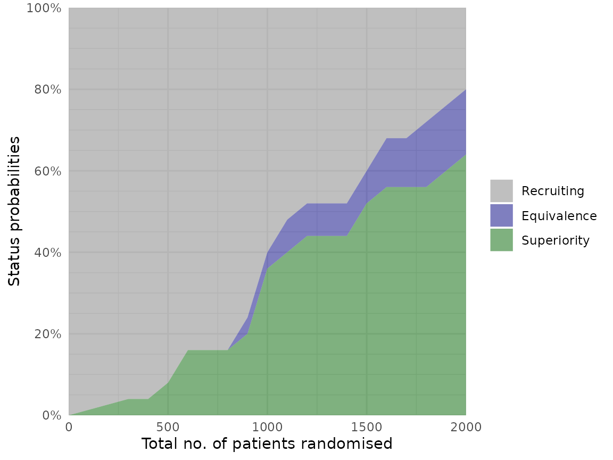
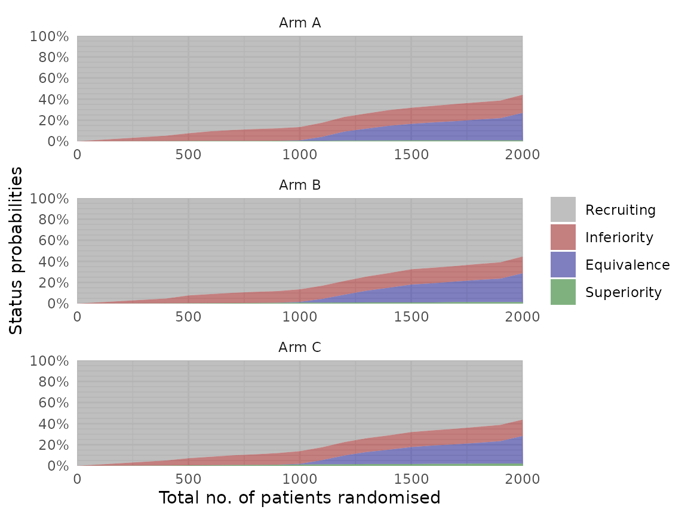
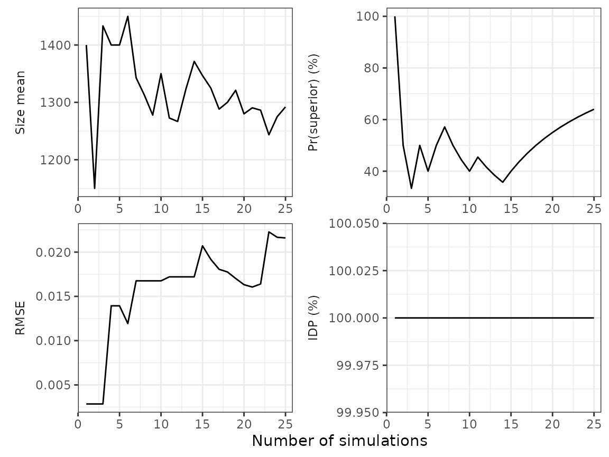

The adaptr package simulates adaptive clinical trials using adaptive stopping, adaptive arm dropping and/or response-adaptive randomisation.
The package has been developed as part of the INCEPT (Intensive Care Platform Trial) project, funded primarily by a grant from Sygeforsikringen “danmark”.
Basic example
First, load the package:
library(adaptr)
#> Loading adaptr package (version 1.0.0.9000).
#> See 'help("adaptr")' or 'vignette("Overview", "adaptr")' for help.
#> Further information available on https://inceptdk.github.io/adaptr/.Set up trial
Then, setup a trial with the desired specifications. adaptr offers the general purpose function setup_trial(), but here we use the built-in setup_trial_binom() for a trial with a binary, binomially distributed, undesirable outcome such as mortality (adaptr also includes setup_trial_norm() for continuous, normally distributed outcomes). The example trial specification has three characteristics:
- The allocation probability to each arm cannot be lower than 15% (
min_probs). - Equivalence stopping rule: if the simulation yields a 90% probability (
equivalence_prob) of treatment differences being < 5 %-points (equivalence_diff), the trial is stopped. - We soften allocation ratios (
soften_power) by a constant factor.
binom_trial <- setup_trial_binom(
arms = c("Arm A", "Arm B", "Arm C"),
true_ys = c(0.25, 0.20, 0.30),
min_probs = rep(0.15, 3),
data_looks = seq(from = 300, to = 2000, by = 100),
equivalence_prob = 0.9,
equivalence_diff = 0.05,
soften_power = 0.5
) See ?setup_trial() for more details on these arguments or vignette("Basic-examples", "adaptr") for basic example trial specifications and a thorough review of the general settings, and vignette("Advanced-example", "adaptr") for an advanced example including details on how to specify user-written functions for generating outcomes and posterior draws.
We can print an overview of the trial specification by simply running:
binom_trial
#> Trial specification: generic binomially distributed outcome trial
#> * Undesirable outcome
#> * No common control arm
#> * Best arm: Arm B
#>
#> Arms, true outcomes, starting allocation probabilities
#> and allocation probability limits:
#> arms true_ys start_probs fixed_probs min_probs max_probs
#> Arm A 0.25 0.333 NA 0.15 NA
#> Arm B 0.20 0.333 NA 0.15 NA
#> Arm C 0.30 0.333 NA 0.15 NA
#>
#> Maximum sample size: 2000
#> Maximum number of data looks: 18
#> Planned data looks after: 300, 400, 500, 600, 700, 800, 900, 1000, 1100, 1200, 1300, 1400, 1500, 1600, 1700, 1800, 1900, 2000 patients
#>
#> Superiority threshold: 0.99
#> Inferiority threshold: 0.01
#> Equivalence threshold: 0.9 (no common control)
#> Absolute equivalence difference: 0.05
#> No futility threshold (not relevant - no common control)
#> Soften power for all analyses: 0.5By default, probabilities are shown with 3 decimals. This can be changed by explicitly printing the specification with the prob_digits arguments, for example:
print(binom_trial, prob_digits = 2)
#> Trial specification: generic binomially distributed outcome trial
#> * Undesirable outcome
#> * No common control arm
#> * Best arm: Arm B
#>
#> Arms, true outcomes, starting allocation probabilities
#> and allocation probability limits:
#> arms true_ys start_probs fixed_probs min_probs max_probs
#> Arm A 0.25 0.33 NA 0.15 NA
#> Arm B 0.20 0.33 NA 0.15 NA
#> Arm C 0.30 0.33 NA 0.15 NA
#>
#> Maximum sample size: 2000
#> Maximum number of data looks: 18
#> Planned data looks after: 300, 400, 500, 600, 700, 800, 900, 1000, 1100, 1200, 1300, 1400, 1500, 1600, 1700, 1800, 1900, 2000 patients
#>
#> Superiority threshold: 0.99
#> Inferiority threshold: 0.01
#> Equivalence threshold: 0.9 (no common control)
#> Absolute equivalence difference: 0.05
#> No futility threshold (not relevant - no common control)
#> Soften power for all analyses: 0.5Simulate a single trial
Remember to define the seed to ensure reproducible results. The final trial results are wrapped here, but when used interactively, you can widen the console for non-wrapped output:
trial_res <- run_trial(binom_trial, seed = 12345)
trial_res
#> Single simulation result: generic binomially distributed outcome trial
#> * Undesirable outcome
#> * No common control arm
#>
#> Final status: inconclusive, stopped at maximum sample size
#> Final/maximum allowed sample sizes: 2000/2000 (100.0%)
#>
#> Final trial results:
#> arms true_ys sum_ys ns raw_ests post_ests post_errs lo_cri hi_cri
#> Arm A 0.25 180 742 0.243 0.243 0.0159 0.213 0.275
#> Arm B 0.20 178 841 0.212 0.212 0.0141 0.185 0.241
#> Arm C 0.30 113 417 0.271 0.271 0.0215 0.230 0.316
#> final_status status_look status_probs final_alloc
#> active NA NA 0.194
#> active NA NA 0.656
#> inferior 2000 0.007 0.150
#>
#> Simulation details:
#> * Random seed: 12345
#> * Credible interval width: 95%
#> * Number of posterior draws: 5000
#> * Posterior estimation method: medians with MAD-SDsAgain, we can choose the number of decimals with print:
print(trial_res, prob_digits = 2)
#> Single simulation result: generic binomially distributed outcome trial
#> * Undesirable outcome
#> * No common control arm
#>
#> Final status: inconclusive, stopped at maximum sample size
#> Final/maximum allowed sample sizes: 2000/2000 (100.0%)
#>
#> Final trial results:
#> arms true_ys sum_ys ns raw_ests post_ests post_errs lo_cri hi_cri
#> Arm A 0.25 180 742 0.24 0.24 0.016 0.21 0.27
#> Arm B 0.20 178 841 0.21 0.21 0.014 0.19 0.24
#> Arm C 0.30 113 417 0.27 0.27 0.022 0.23 0.32
#> final_status status_look status_probs final_alloc
#> active NA NA 0.19
#> active NA NA 0.66
#> inferior 2000 0.007 0.15
#>
#> Simulation details:
#> * Random seed: 12345
#> * Credible interval width: 95%
#> * Number of posterior draws: 5000
#> * Posterior estimation method: medians with MAD-SDsSimulate multiple trials
Generally, we want to run many simulations using the same trial specification to assess and compare performance metrics of different trial designs. This is the job of run_trials() (note the final s); again, note the use of a base_seed for reproducible results. Here we run 25 simulations (for tolerable run-time when producing this example), but in practice you will probably want to run more simulations.
trial_res_mult <- run_trials(binom_trial, n_rep = 25, base_seed = 67890)
trial_res_mult
#> Multiple simulation results: generic binomially distributed outcome trial
#> * Undesirable outcome
#> * Number of simulations: 25
#> * Number of simulations summarised: 25 (all trials)
#> * No common control arm
#> * Selection strategy: no selection if no superior arm
#> * Treatment effect compared to: no comparison
#>
#> Performance metrics (using posterior estimates):
#> * Sample sizes: mean 1324.0 (SD: 547.2) | median 1200.0 (IQR: 1000.0 to 1900.0)
#> * Total summarised outcomes: mean 296.1 (SD: 111.5) | median 282.0 (IQR: 228.0 to 415.0)
#> * Total summarised outcome rates: mean 0.228 (SD: 0.013) | median 0.230 (IQR: 0.220 to 0.235)
#> * Conclusive: 80.0%
#> * Superiority: 64.0%
#> * Equivalence: 16.0%
#> * Futility: 0.0% [not assessed]
#> * Inconclusive at max sample size: 20.0%
#> * Selection probabilities: Arm A: 0.0% | Arm B: 64.0% | Arm C: 0.0% | None: 36.0%
#> * RMSE: 0.01642
#> * RMSE treatment effect: not estimated
#> * Ideal design percentage: 100.0%
#>
#> Simulation details:
#> * Simulation time: 0.707 secs
#> * Base random seed: 67890
#> * Credible interval width: 95%
#> * Number of posterior draws: 5000
#> * Estimation method: posterior medians with MAD-SDsrun_trials() can run simulations on several CPU cores concurrently: set the cores argument to some number greater than 1 (which is the default value, resulting in serial/non-parallel processing). As an aside, you can see the number of available CPU cores by calling parallel::detectCores().
Get the results of multiple trials
Just printing the resulting object (as the last line above) is not necessarily what you want. adaptr has two convenience functions to get the results of multiple simulations of the same trial specification, extract_results() and summary(); see their documentation for details, e.g. on arm selection in trials not ending with superiority. The extract_results() function yields a tidy data.frame with one simulation per row:
extr_res <- extract_results(trial_res_mult)
nrow(extr_res)
#> [1] 25
head(extr_res)
#> sim final_n sum_ys ratio_ys final_status superior_arm selected_arm
#> 1 1 2000 415 0.2075000 max <NA> <NA>
#> 2 2 600 139 0.2316667 superiority Arm B Arm B
#> 3 3 1000 237 0.2370000 superiority Arm B Arm B
#> 4 4 900 209 0.2322222 equivalence <NA> <NA>
#> 5 5 2000 441 0.2205000 superiority Arm B Arm B
#> 6 6 1900 431 0.2268421 superiority Arm B Arm B
#> sq_err sq_err_te
#> 1 NA NA
#> 2 7.853843e-04 NA
#> 3 4.190319e-05 NA
#> 4 NA NA
#> 5 3.422824e-06 NA
#> 6 4.852161e-05 NAsummary() (as expected and known from, e.g., regression models in R) summarises the results in a human-friendly manner. Individual key results can be extracted from the resulting object or printed:
res_sum <- summary(trial_res_mult)
print(res_sum, digits = 1)
#> Multiple simulation results: generic binomially distributed outcome trial
#> * Undesirable outcome
#> * Number of simulations: 25
#> * Number of simulations summarised: 25 (all trials)
#> * No common control arm
#> * Selection strategy: no selection if no superior arm
#> * Treatment effect compared to: no comparison
#>
#> Performance metrics (using posterior estimates):
#> * Sample sizes: mean 1324.0 (SD: 547.2) | median 1200.0 (IQR: 1000.0 to 1900.0)
#> * Total summarised outcomes: mean 296.1 (SD: 111.5) | median 282.0 (IQR: 228.0 to 415.0)
#> * Total summarised outcome rates: mean 0.228 (SD: 0.013) | median 0.230 (IQR: 0.220 to 0.235)
#> * Conclusive: 80.0%
#> * Superiority: 64.0%
#> * Equivalence: 16.0%
#> * Futility: 0.0% [not assessed]
#> * Inconclusive at max sample size: 20.0%
#> * Selection probabilities: Arm A: 0.0% | Arm B: 64.0% | Arm C: 0.0% | None: 36.0%
#> * RMSE: 0.01642
#> * RMSE treatment effect: not estimated
#> * Ideal design percentage: 100.0%
#>
#> Simulation details:
#> * Simulation time: 0.707 secs
#> * Base random seed: 67890
#> * Credible interval width: 95%
#> * Number of posterior draws: 5000
#> * Estimation method: posterior medians with MAD-SDsVisualise trial results
We need non-sparse results for plot_history (but not for plot_status), so first we re-run run_trials():
trial_res_mult <- run_trials(binom_trial, n_rep = 25, base_seed = 67890,
sparse = FALSE)Note that the adaptr plotting functions require the ggplot2 package. First, we plot the overall trial statuses according to the total number of patients randomised (this does not require sparse = FALSE):
plot_status(trial_res_mult, x_value = "total n")
We can also plot the statuses for specific arms. In this example, Arm A is increasingly dropped for inferiority as simulations progress:
plot_status(trial_res_mult, x_value = "total n", arm = "Arm A")
Next, we plot the history of allocation probabilities at each adaptive analysis look. Intervals cover the inter-quartile range by default (interval_width = 0.5):
plot_history(trial_res_mult)
Plotting other summary metrics is possible; see plot_history().
Citation
If using the package, please consider citing:
citation(package = "adaptr")
#>
#> To cite adaptr in publications use:
#>
#> Granholm A, Jensen AKG, Lange T, Kaas-Hansen BS (2022). adaptr: an R
#> package for simulating and comparing adaptive clinical trials.
#> Journal of Open Source Software, 7(72), 4284. URL
#> https://doi.org/10.21105/joss.04284.
#>
#> A BibTeX entry for LaTeX users is
#>
#> @Article{,
#> title = {{adaptr}: an R package for simulating and comparing adaptive clinical trials},
#> author = {Anders Granholm and Aksel Karl Georg Jensen and Theis Lange and Benjamin Skov Kaas-Hansen},
#> journal = {Journal of Open Source Software},
#> year = {2022},
#> volume = {7},
#> number = {72},
#> pages = {4284},
#> url = {https://doi.org/10.21105/joss.04284},
#> doi = {10.21105/joss.04284},
#> }